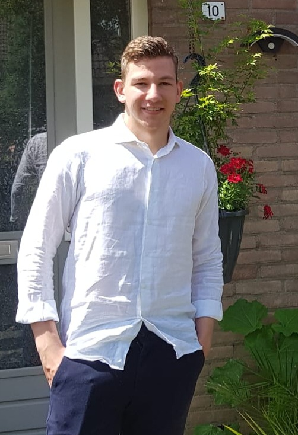
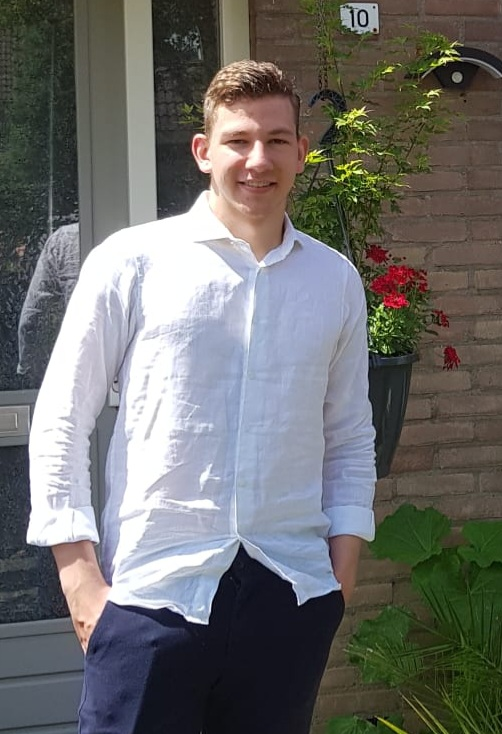

Welkom, mijn naam is Yaran
Ik ben 18 jaar oud en woon in 's-Gravendeel.
Ik ben 18 jaar oud en woon in 's-Gravendeel.
Mijn hobby's zijn:
| Games | Cijfer |
|---|---|
| Final Fantasy VII remake | 10 |
| Persona 5 Royal | 10 |
Tijdens dit vak wil ik leren hoe je websites kan maken.